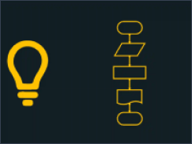
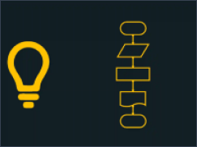

Portugol é uma linguagem de programação didática que utiliza uma sintaxe
baseada na língua portuguesa.
Seu principal objetivo é ensinar lógica de programação para iniciantes,
eliminando a complexidade de linguagens como Python, Java ou C.
Ele funciona como um pseudocódigo (algoritmo estruturado), ou seja, um
modelo simplificado de código que permite a escrita de algoritmos de forma
estruturada e compreensível, sem a necessidade de aprender uma sintaxe
rigorosa.
Embora não seja uma linguagem de programação propriamente dita, o Portugol é
uma excelente ferramenta para desenvolver o pensamento lógico, sendo
amplamente utilizado no ensino de programação.
Voltar
Olá, Fulano
Seja bem-vindos(a) à plataforma de cursos.
 

Criado por:
Gustavo Porto